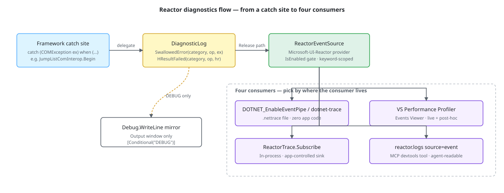

When Microsoft.UI.Reactor (Reactor) swallows an exception, returns past an HRESULT, or
otherwise chooses to continue rather than throw, the framework has
historically dropped a Debug.WriteLine and moved on. That worked for
the contributor — the message landed in Visual Studio's Output window
during a Debug build — but it disappeared in Release, which is the
configuration every shipped app runs. Spec 044 fixed that: error and
HRESULT diagnostics now route through the Microsoft-UI-Reactor
EventSource (release-visible, keyword-gated, zero-allocation when
no consumer is listening), and the existing in-process devtools tool
(reactor.logs) was extended so an MCP agent can read framework
events in the same call that returns stdout / stderr / debug output.
Diagnostics¶
This page is about reading Reactor's diagnostics from a real app — not about adding new events. The emission pipeline (keywords, IsEnabled gate, event-id allocation, EventPipe vs ETW transport split) lives in perf-instrumentation.md; start there if you are extending the provider.

The rule¶
Audience, not severity, decides the channel. Debug.WriteLine
exists for the contributor working on the framework itself; the
target audience is "someone reading the Output window in Visual
Studio with their checkout open". ReactorEventSource exists for
the app developer, the SRE, and the support engineer; the target
audience is "someone who runs the shipped binary and needs to know
why a window failed to open".
| Audience | Channel | Visible in Release? |
|---|---|---|
| Framework contributor | Debug.WriteLine, Debug.Assert |
No |
| App developer / SRE | Microsoft-UI-Reactor EventSource |
Yes |
| Unreachable code | throw new UnreachableException(...) |
Yes (as a crash) |
The two channels are complementary, not redundant. A swallowed
exception in RenderContext emits both — the typed event for the
app developer and a richer Debug.WriteLine mirror (with the
exception message) for the contributor running a Debug build. The
mirror is [Conditional("DEBUG")] and compiles out in Release.
Caveat: Exception messages are PII-shaped and never reach the ETW payload.
ex.Messagecan carry absolute paths, environment values, partial form values, and the bound user data that caused the failure. The typed event payload carries the exception type only (InvalidOperationException,COMException); a same-UIDdotnet-traceconsumer sees the type and nothing else. If you need the message in your own logs, attach an in-process subscriber (seeReactorTrace.Subscribebelow) and forward to a sink under your own ACL.
What's instrumented¶
The provider's events split across a small set of keywords; spec 044
adds six subsystem keywords on top of the seven the perf-instrumentation
page documents, and spec 049 added a seventh (HotReload). Pick the
bits that match what you're triaging:
| Keyword | Bit | Covers |
|---|---|---|
Errors |
0x20 |
Generic SwallowedError / HResultFailed / Warning, plus RenderError |
Hosting |
0x80 |
WindowOpened, WindowClosed, WindowDpiChanged, BackdropMaterializationFailed |
Persistence |
0x100 |
PersistenceRead, PersistenceWrite, PersistenceRejected |
Navigation |
0x200 |
NavigationRequested, NavigationCompleted, NavigationCancelled, cache hit/miss/evict, transitions, deep-link |
Intl |
0x400 |
IntlMissingKey |
Theme |
0x800 |
ThemeApplyFailed |
Shell |
0x1000 |
JumpList* / ThumbnailToolbar* / Tray* (planned) |
HotReload |
0x2000 |
Hook-state migration across edits (spec 049) |
Combine bits with bitwise-or. The most common capture-everything-
unsurprising mask is 0x1FA0 (Errors | Hosting | Persistence |
Navigation | Intl | Theme) — drops the verbose State and
EventDispatch keywords that produce per-state-write spam. Add
0x2000 when you are debugging why hot reload reset a component's
state.
Warning carries a framework-authored diagnostic for a recoverable
misconfiguration the framework chose to continue past — an unresolved
.ApplyStyle() key, a backdrop that could not materialize. Its payload is
three strings:
| Field | Meaning |
|---|---|
category |
Subsystem label, e.g. Theme, Hosting |
operation |
Stable operation identifier, e.g. ApplyStyle |
message |
Framework-authored explanation, naming the offending key or property |
The message is composed by the framework from developer-authored identifiers, never from user data (spec 044 §6.2.1).
NativeAOT: the .NET NativeAOT toolchain defaults the
EventSourceSupportfeature switch tofalse, which compiles the wholeEventSourcesurface out. A NativeAOT-published app therefore emits none of these events — includingWarning— until it opts back in with<EventSourceSupport>true</EventSourceSupport>in its project file. The DEBUGDebug.WriteLinemirror is unaffected.
Capturing a trace¶
There are four routes. Pick by where the consumer lives.
Environment variables — zero code, file output¶
For a quick local capture with no app changes, the .NET runtime can
write an EventPipe .nettrace file driven entirely by environment
variables. This is the right tool when an issue reproduces only in a
shipped build, on a different machine, or when you want to hand the
trace off to someone else:
set DOTNET_EnableEventPipe=1
set DOTNET_EventPipeOutputPath=reactor.nettrace
set DOTNET_EventPipeConfig=Microsoft-UI-Reactor:0x1FA0:5
MyApp.exe
The third variable is <provider>:<keywords>:<level>. 0x1FA0 is
the everything-unsurprising mask above; level 5 is Verbose. Run
the app, reproduce the issue, exit cleanly (the runtime flushes the
file on shutdown). Open the resulting .nettrace in Visual Studio's
Performance Profiler → Events Viewer.
dotnet-trace — attach to a running process¶
dotnet-trace is the cross-platform CLI for EventPipe capture.
Useful when the app is already running and you want to scope the
window:
dotnet-trace collect ^
--process-id <pid> ^
--providers Microsoft-UI-Reactor:0x1FA0:5 ^
--output reactor.nettrace
Ctrl+C stops the session; the .nettrace lands in the working
directory. Same file format as the env-var route — same Events
Viewer workflow.
Visual Studio Performance Profiler¶
For a GUI workflow, the Profiler's Events Viewer accepts the same provider:keyword:level format. Diagnostics → Performance Profiler → Events Viewer → Settings → Custom Provider:
The timeline ties each Reactor event to the CPU sample, GC, and
network views, so you can see a NavigationCompleted next to the
allocation spike it caused.
In-process subscription¶
When the consumer is the app itself — a custom log sink, a devtools
overlay, an in-app diagnostics page — ReactorTrace.Subscribe
returns an IDisposable token that fires the callback for each
event matching the filter:
public static IDisposable Subscribe(
Action<ReactorEvent> onEvent,
EventLevel level = EventLevel.Verbose,
EventKeywords keywords = (EventKeywords)(-1))
{
ArgumentNullException.ThrowIfNull(onEvent);
return new Subscription(onEvent, level, keywords);
}
Multiple concurrent subscribers are supported; each filter is
independently active until the token is disposed. The subscriber
callback runs on the emission thread (usually the UI dispatcher when
the event originates from reconcile / render), so keep the work
minimal — the framework wraps the call in try/catch so a buggy
sink can't propagate to EventSource.WriteEvent, but the dispatcher
is still blocked for the duration. Forward to a queue if your sink
does anything expensive.
ReactorTrace.Subscribe is not a file-capture API. It exists
because in-process consumers (devtools, an ILogger adapter, a
custom diagnostics page) need access to the same events the env-var
route writes to disk. For a .nettrace file, use one of the three
routes above — they cost less and emit a richer format.
reactor.logs source=event — MCP integration¶
The Reactor in-process devtools (mur devtools) expose a logs MCP
tool that drains the captured Console.Out / Console.Error /
Debug.WriteLine ring buffer. Spec 044 extended the tool so the
buffer also captures Microsoft-UI-Reactor ETW events, surfaced
under a new source=event filter:
// Request
{
"method": "tools/call",
"params": {
"name": "logs",
"arguments": { "source": "event", "tail": 20, "level": "Warning" }
}
}
// Response — each entry now carries eventName / eventId
{
"entries": [
{
"seq": 142,
"ts": "2026-05-19T17:42:11.330Z",
"source": "event",
"level": "Warning",
"text": "SwallowedError category=Hosting operation=ReactorWindow.Close exceptionType=COMException",
"eventName": "SwallowedError",
"eventId": 16
}
],
"nextSeq": 143,
"dropped": 0
}
Existing clients that don't pass source=event see zero behavior
change — the stdout / stderr / debug filters still return their
dedicated streams. The eventName and eventId fields are present
on every entry but are null for non-event sources, so a client
written before spec 044 ignores them safely.
HR-style payload fields render in the same 0x{X8} shape the
pre-migration Debug.WriteLine sites used (HResultFailed
category=Shell operation=JumpList.Begin hr=0x80004002), so log
greps that matched the old shape continue to hit.
Patterns¶
Reading a swallow that happened in production¶
A customer reports a window that won't close cleanly on a specific
machine. Capture with the env-var route, filter to the Errors
keyword (0x20) at Warning, and open the trace in Events Viewer.
The relevant entries will look like:
SwallowedError category=Hosting operation=ReactorWindow.Close exceptionType=COMException
HResultFailed category=Hosting operation=ReactorWindow.Close hr=0x80010108
The operation label is stable and developer-authored — search the
Reactor source for "ReactorWindow.Close" and you land on the
DiagnosticLog.SwallowedError call site. The exception type and HR
together pin the failure class (in this case, RPC_E_DISCONNECTED —
the AppWindow COM proxy was torn down before the call landed) without
ever leaking the user-visible window title.
Wiring ReactorTrace.Subscribe to a per-window debug overlay¶
A devtools overlay that wants to surface "navigation event happening now" doesn't need a file capture — just an in-process subscription:
public sealed class NavigationOverlay : IDisposable
{
// ReactorEventSource is internal to Reactor, so an app names the
// keyword by its documented bit value rather than by symbol.
private const EventKeywords NavigationKeyword = (EventKeywords)0x200;
private readonly IDisposable _subscription;
private readonly Queue<string> _ring = new();
public NavigationOverlay()
{
_subscription = ReactorTrace.Subscribe(
evt =>
{
var line = $"{evt.EventName} {string.Join(' ',
Enumerable.Range(0, evt.Payload.Count)
.Select(i => $"{evt.PayloadNames[i]}={evt.Payload[i]}"))}";
lock (_ring)
{
_ring.Enqueue(line);
while (_ring.Count > 50) _ring.Dequeue();
}
},
level: EventLevel.Verbose,
keywords: NavigationKeyword);
}
public void Dispose() => _subscription.Dispose();
}
Subscribe already applies the keyword mask, so the callback does not
re-check evt.Keywords.
The callback runs on the dispatcher (most navigation events originate there) — for a UI overlay that's actually what you want. If the overlay forwards to a background sink instead, marshal off the dispatcher before doing the I/O.
Common Mistakes¶
Treating Debug.WriteLine as a release diagnostic¶
// Don't:
try { window.AppWindow.Close(); }
catch (Exception ex)
{
Debug.WriteLine($"Close failed: {ex}"); // disappears in Release
}
private void CloseNativeWindowOnce()
{
if (_disposed || _nativeCloseRequested) return;
_nativeCloseRequested = true;
try { _window.Close(); }
catch (COMException ex) when (HResults.IsTeardownReentry(ex.HResult))
{ DiagnosticLog.SwallowedError(LogCategory.Hosting, "ReactorWindow.Close", ex); }
}
The first form was invisible to every shipped app. The second form
emits to Microsoft-UI-Reactor under Keywords.Errors at Warning
in Release (zero allocation when no consumer is attached) and
mirrors a richer line including ex.Message to Debug.WriteLine
in Debug builds. The narrow catch filter is the deliberate part:
spec 044 §6.7.2 calls for catch (COMException ex) when (ex.HResult is
HResults.X or HResults.Y) — never a bare catch (COMException),
because the bug-class HRESULTs need to keep propagating.
HResults.IsTeardownReentry bundles the standard four
(RPC_E_DISCONNECTED, E_HANDLE, RPC_E_SERVERFAULT,
CO_E_OBJNOTCONNECTED); name individual constants when a call site
needs a different set.
Caveat:
DiagnosticLog,LogCategory,HResults, andReactorEventSourceare internal to the Reactor assembly — this pattern is the contract for framework code, not an API your app calls. An app that wants the same discipline should route its own swallows through its own logger; what an app consumes from Reactor is the event stream, via the four capture routes above.
Capturing without pinning the level¶
Defaults to Verbose plus all keywords. A typical 30-second session
on a busy app writes hundreds of megabytes — and State keyword
events fire once per UseState write, so a state-heavy screen
becomes the entire trace. Pin both:
0x1FA0 is Errors | Hosting | Persistence | Navigation | Intl |
Theme — the everything-unsurprising mask. :5 is Verbose. The
trace shrinks by an order of magnitude.
Computing the diagnostic payload outside the IsEnabled gate¶
public static void SwallowedError(LogCategory category, string? operation, Exception? ex)
{
// Cost-of-disabled: when no consumer enables Keywords.Errors at
// Warning the entire branch is skipped — no enum-to-string, no
// type-name materialization, no WriteEvent dispatch.
if (ReactorEventSource.Log.IsEnabled(EventLevel.Warning, ReactorEventSource.Keywords.Errors))
{
ReactorEventSource.Log.SwallowedError(
category.ToString(),
operation ?? string.Empty,
ex?.GetType().Name ?? string.Empty);
}
DebugSwallowedError(category, operation, ex);
}
DiagnosticLog.SwallowedError does its category.ToString() and
ex.GetType().Name work inside the
ReactorEventSource.Log.IsEnabled(...) gate, not outside. The
distinction is the entire point of the "zero-allocation when no
consumer is attached" guarantee. If a future helper materializes
the payload first and gates second, the no-allocation regression
test (DisabledKeyword_skips_ReactorEventSource_WriteEvent_payload_marshal)
catches it. The companion HResultFailed event has the same shape:
[Event(17, Level = EventLevel.Warning, Keywords = Keywords.Errors,
Message = "HResult failed (category={category}, op={operation}, hr=0x{hr:X8})")]
public void HResultFailed(string category, string operation, int hr)
{
if (IsEnabled(EventLevel.Warning, Keywords.Errors))
WriteEvent(17, category ?? string.Empty, operation ?? string.Empty, hr);
}
Forwarding ex.Message through ReactorTrace.Subscribe¶
// Don't — capturing the exception and forwarding its message defeats the strip:
Exception? lastEx = null;
try { /* ... */ }
catch (Exception caught)
{
lastEx = caught;
DiagnosticLog.SwallowedError(LogCategory.Hosting, "MyOp", caught);
}
ReactorTrace.Subscribe(evt =>
{
// BAD: re-injects PII that the ETW payload deliberately excluded.
_logger.Warn(evt.EventName + ": " + string.Join(",", evt.Payload) + " " + lastEx?.Message);
});
The framework already stripped ex.Message from the payload —
re-adding it from a captured local is exactly the PII leak the strip
prevented. If a sink needs the message, log it inside the catch
block (where the exception is in scope and the sink's ACL applies),
not at the ReactorTrace.Subscribe boundary.
Tips¶
reactor.logs source=event is the fastest read. Inside a
devtools session, calling the MCP tool returns the last N events
instantly without spinning up a dotnet-trace capture. Use the
env-var route when you need to hand a file to someone else; use the
MCP tool when you're sitting in front of the running app.
The keyword mask is the audience pre-filter. Subscribing on
Keywords.Errors alone is dramatically cheaper than (-1) because
the framework's hot reconcile / render paths drop their IsEnabled
check immediately. A long-lived broad subscription raises the cost
of every hot-path call site on the framework for as long as it
lives.
HR fields are 0x{X8}-rendered in reactor.logs text. The MCP
tool's text rendering recognizes payload field names hr,
hresult, and hwnd and formats them as 8-digit uppercase hex.
This matches the pre-migration Debug.WriteLine shape so existing
log greps keep working.
Next Steps¶
- Perf Instrumentation — The emission pipeline, keyword design, and the IsEnabled gate. Read first if you're adding events.
- DevTools Internals — The MCP server and
logstool plumbing the diagnostic events flow through. - Persistence — Where
PersistenceRead/PersistenceWrite/PersistenceRejectedfire from. - Navigation — The route lifecycle that emits the Navigation-keyword events.